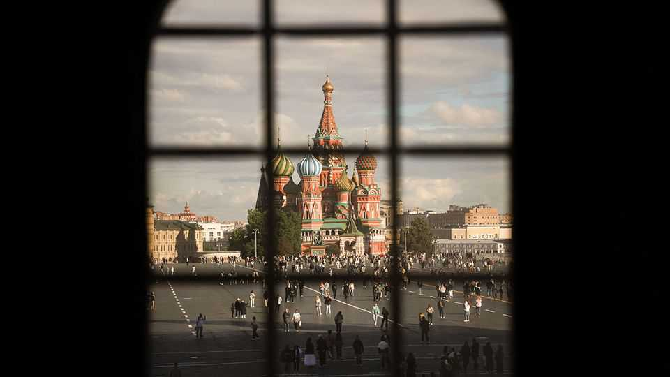

Russia’s war economy has problems—but is not about to crash
Vladimir Putin is still able to fund his aggression
June 25th 2026

IS THIS IT, finally? After four years of sanctions-busting growth, a chorus of think-tank economists is calling time on Russia’s war economy. A new report from the Kiel Institute for the World Economy argues that Russia faces “structural exhaustion”. Charles Hecker of the Royal United Services Institute reckons it “is probably already in recession”. Nigel Gould-Davies of the International Institute for Strategic Studies talks of “the coming crisis in Russia’s political economy”. Even Russian official figures point to GDP shrinking by 0.2% in the first quarter, year on year.
Since invading Ukraine in 2022 Vladimir Putin’s Russia has thumbed its nose at those who have predicted economic doom. It has defied Western sanctions by trading more with places like China and India, and spent ample fiscal reserves on the armed forces, infrastructure and social benefits. Between 2022 and 2025 GDP per person, adjusting for inflation, rose by 12%—weak by the standards of other emerging markets, and flattered by defence production that does not benefit households, but not bad when compared with the dire predictions. Despite fresh strains, the economy is not about to collapse.

Start with the weak official statistics. These are, largely, a statistical mirage. A rise in value-added tax (VAT) in January, from 20% to 22%, encouraged Russians to make lots of purchases in late 2025, boosting that quarter’s growth at the expense of the next. Early 2026 also had fewer working days than a year earlier, and—even by Russian standards—grim weather. A potentially cleaner gauge of economic activity, produced by Goldman Sachs, is consistent with sluggish growth but no slump (see chart 1). Data from VEB, another bank, points to a pick-up in GDP in March and April, thanks in part to a surge in oil prices. Russia is almost certainly not in recession.
Elsewhere, the picture is mixed. Consumer confidence has slipped, according to a measure tracked by the Levada Centre, an independent pollster. But that was from close to an all-time high (see chart 2). Jobs may be a bit scarcer, yet unemployment remains close to a record low of around 2%. Russia is finding it more difficult to export fossil fuels as Ukraine ramps up attacks on its energy infrastructure, and oil prices are down from the highs attained during the Iran war. Even so, overall goods exports in April were slightly higher than a year earlier.

In some ways the economy is improving. Inflation is half its recent peak of over 10%. Real wages, already 25% higher than in 2019, keep rising. Many firms are doing just fine. From January to May Aeroflot, the flag-carrier, flew passengers a total 40bn kilometres, nearly 10% more than the same period last year. Oligarchs are doing even better. Sales of luxury cars smuggled from the West are up; those of Lamborghinis, by 80% from 2025.
This resilience owes a lot to heavy fiscal stimulus. Last year the government spent 7-8% of GDP on the armed forces. These outlays, those who foresee a crisis argue, suck manpower from the rest of the economy and drain the exchequer. Perhaps. Yet the military splurge represents an increase of 3-4% of GDP from the pre-war norm—not nothing but not enough to have huge knock-on effects. The civilian economy is treading water, not contracting.
Russia’s fiscal problems, meanwhile, are not yet acute. To pay for the war the government can raise taxes, as with VAT. It can fund any shortfall—currently some 3% of GDP—by dipping into its rainy-day funds. It can borrow from the captive domestic market. At a pinch, Mr Putin’s financiers can raid the rouble deposits held by corporations and households. This would be a last resort with real knock-on consequences. But who would stop them?
All things considered, Russia can expect GDP growth of 1% or so this year: about as good as France or Canada. Tougher sanctions, like those unveiled by Britain on June 16th, may cut this growth a bit. So will oil prices, if they continue to fall, and more Ukrainian attacks on Russian oil infrastructure. But it would take something much more radical to keep Mr Putin’s war economy from trundling along. ■
For more expert analysis of the biggest stories in economics, finance and markets, sign up to Money Talks, our weekly subscriber-only newsletter.